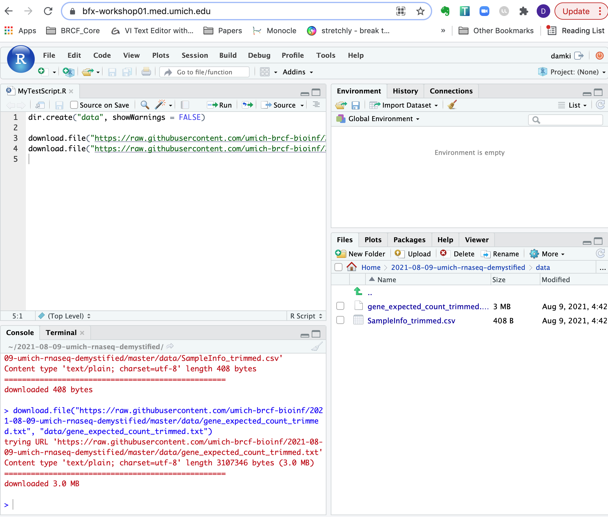

Reproducible Research
Today we’ll be exploring some RNA-seq data that is fairly representative of what we see in the core and start with input files similar to the count tables currently being delivered by the Advanced Sequencing Core.
Logging into the RStudio server
First navigate to server address bfx-workshop01.med.umich.edu, using a web browser. You should see a sign-in prompt screen, similar to shown below

Next, use your unique name and the same password used yesterday to log-in to the server from the command line. You should now see some familar RStudio panels in your web browser window.

Best practices for file organization
As discussed in Software Carpentry and other forums, including a review by Nobel, 2009, file organization is an important part of reproducible research.
To follow best practices for file organization for bioinformatics/computational projects, we will need to make sure there are separate locations for:
- Raw data
- Code
- Output files
Such as illustrated in this figure from the Noble review:

To organize our files for our analysis today, we’ll create a new folder in our home directory and name it 2021-Nov-umich-rnaseq-demystified:
dir.create("~/2021-08-09-umich-rnaseq-demystified", showWarnings = FALSE)
Then we’ll set this our working directory:
setwd("~/2021-08-09-umich-rnaseq-demystified")
Before moving forward, let’s double check that we’re in the right place.
getwd()
Checkpoint: Please use the red ‘x’ button in your zoom reaction panel if you are not in your own ‘2021-Nov-umich-rnaseq-demystified’ directory after executing the getwd() commands and the green ‘check’ if you see a similar path as I do
Creating our code file
Next, we’ll create a new code file, use the toolbar at the top of our window and click the icon that looks like white square with a small green plus symbol. From the drop down menu, select the first option named ‘R Script’.
TODO: Add screen shot highlighting ‘new file’ button
A new window should pop up in your console. We’ll then use the blue floppy disc icon save our ‘Untitled1’ file as “RNASeqAnalysis.R”.
TODO: Add screen shot highlighting ‘save’ button
This new “RNASeqAnalysis.R” will serve as a record of our analysis and should be saved in a separate location from our raw data, such as our current working directory of 2021-08-09-umich-rnaseq-demystified.
Note: This code file can also serve as a starting point for working through differential expression comparisons with other example datasets or your own data in the future.
Downloading our data
Next, we’ll create a new folder within 2021-08-09-umich-rnaseq-demystified called data to store our raw data by copying & pasting the following command.
dir.create("data", showWarnings = FALSE)
Checkpoint: Please use the green ‘check’ if you see ‘data’ within your ‘2021-08-09-umich-rnaseq-demystified’ directory and use the red ‘x’ button in your zoom reaction panel if you’d like the steps repeated
Next, we’ll download the files we’ll need for today by copying and pasting the follow.
download.file("https://raw.githubusercontent.com/umich-brcf-bioinf/2021-08-09-umich-rnaseq-demystified/master/data/SampleInfo_trimmed.csv", "data/SampleInfo_trimmed.csv")
download.file("https://raw.githubusercontent.com/umich-brcf-bioinf/2021-08-09-umich-rnaseq-demystified/master/data/gene_expected_count_trimmed.txt", "data/gene_expected_count_trimmed.txt")
If we look within our ‘data’ folder, we should now see two files:

Checkpoint: Please use the red ‘x’ button button if you don’t see the files after clicking on the “data” directory so I can repeat the steps. If you have successfully downloaded the data then used the green ‘check’ button.
Code execution shortcut reminder
Ctrl-Enter is a standard shortcut in Rstudio to send the current line (or selected lines) to the console. If you see an >, then R has executed the command. If you see a +, this means that the command is not complete and R is waiting (usually for a )).
Click for review of R conventions for object names
R has some restrictions for naming objects: * Cannot start with numbers * Cannot include dashes * Cannot have spaces * Should not be identical to a named function * Dots & underscores will work but are better to avoid
Check package installations
Several packages have already been installed on the server, so we can load them into our R session now. To do that we’ll use the library function to load the required packages.
library(DESeq2)
library(ggplot2)
library(tidyr)
library(dplyr)
library(matrixStats)
library(ggrepel)
library(pheatmap)
library(RColorBrewer)
library(data.table)
Note: We expect to see some red messages in your console while these packages are loading
As discussed in the computation foundations/prerequsite sessions, R/RStudio has great resources for getting help, including code ‘cheatsheets’ and package vignettes, like for tidyr.
We previously loaded several libraries into our R session, we can check the tools documentation out using the ? operator.
?`DESeq2-package`
Checkpoint: If you see the R documentation for DESeq2 pop up in your ‘help’ panel on the right, please indicate with the green ‘check’ button. If not please use the red ‘x’ button.
Raw data as input
Another key assumption for DESeq2 is that the analysis will start with un-normalized counts.
To begin our analysis, we’ll read in the raw count data file, gene_expected_count_trimmed.txt which is similar to what would be generated in the alignment steps yesterday (and what you could receive from AGC). We’ll discuss later a few normalizations that can be helpful for us to understand how much a gene is expressed within or between samples, but normalized data should not be used as an input for DESeq2.
CountTable <- read.table("data/gene_expected_count_trimmed.txt", header = TRUE, row.names = 1)
head(CountTable, n=2) # look at the top of the table
## Sample_116498 Sample_116499 Sample_116500 Sample_116501 Sample_116502 Sample_116503 Sample_116504
## ENSMUSG00000000001 8256 6680 7532 5122 6684 8047 6446
## ENSMUSG00000000003 0 0 0 0 0 0 0
## Sample_116505 Sample_116506 Sample_116507 Sample_116508 Sample_116509
## ENSMUSG00000000001 5559 5443 5906 5771 4792
## ENSMUSG00000000003 0 0 0 0 0
Now that the file is read into R, note that we’ve created a data frame that includes ‘gene ids’ in ENSEMBL format as rownames and count data from twelve different samples.
[Exercise]
If we think back to the RSEM outputs, the ‘expected_counts’ table may include fractions due to how the alignment tool resolves reads that map to multiple locuses). Since DESeq2 requires whole numbers, if we try to use the RSEM ouputs directly, DESeq2 will give us an error.
First let’s check the count table in a different way, to see if our table includes fractions.
tail(CountTable, n=2)
## Sample_116498 Sample_116499 Sample_116500 Sample_116501 Sample_116502 Sample_116503 Sample_116504
## ENSMUSG00000118577 752.33 613.24 417.04 412.63 429.74 553.50 479.16
## ENSMUSG00000118578 34.49 20.58 12.10 14.88 14.05 34.62 18.57
## Sample_116505 Sample_116506 Sample_116507 Sample_116508 Sample_116509
## ENSMUSG00000118577 825.36 520.06 383.61 404.31 353.35
## ENSMUSG00000118578 14.01 11.14 4.69 11.81 7.74
[Question]: To resolve this discrepancy between the RSEM outputs and expected input for DESeq2, what could we do?
To round down all the columns of our CountTable that include count data (all columns since we set the gene names to be our row names), we can use the floor() function.
CountTable <- floor(CountTable)
tail(CountTable, n=2) # now whole numbers
## Sample_116498 Sample_116499 Sample_116500 Sample_116501 Sample_116502 Sample_116503 Sample_116504
## ENSMUSG00000118577 752 613 417 412 429 553 479
## ENSMUSG00000118578 34 20 12 14 14 34 18
## Sample_116505 Sample_116506 Sample_116507 Sample_116508 Sample_116509
## ENSMUSG00000118577 825 520 383 404 353
## ENSMUSG00000118578 14 11 4 11 7
An important note is that there are several bonus content sections on the instruction pages, like the two below that we will not be covering in this workshop, but that may have useful context or be helpful when you review this material.
Click for alternative DESeq2 input options for RSEM outputs
The package tximport is another optionrecommended the DESeq2 authors to read in the RSEM expected_counts, as this package allows for the average transcript length per gene to be used in the DE analysis and, as described by the author, the tximport-to-DESeqDataSet constructor function round the non-integer data generated by RSEM to whole numbers.
Click for comparison of RNA-seq data and microarray data
With higher sensitivity, greater flexiblity, and decreasing cost, sequencing has largely replaced microarray assays for measuring gene expression. A key difference between the platforms is that microarrays measure intensities and are therefore continous data while the count data from sequencing is discrete. A more detailed comparison between microarrays and sequencing technologies/analysis is outlined in the online materials for Penn State’s STAT555 course
After the count data is processed, we can move on to “unblinding” our data, as the sample names are unique identifiers generated by a sequencing center and not very informative as far what samples belong to which experimental conditions.
Getting help
R/Rstudio has a strong community component so if you are getting an error or wondering how to make a command work or how to perform a specific task, there is likely already a solution out there. Remember that Google is your friend, although it can sometimes be a challenge to figure out what to search for. Key parts of a successful search:
- Package or command run
R or Bioconductor- The error message if there is one
- Version information
How to get session information to aid in a search:
sessionInfo()
Highly recommend using resources like Bioconductor Support, Biostars, and Stack Overflow, including threads on specific packages or common bioinformatic tasks.
I personally use one or more of these resources every day.
